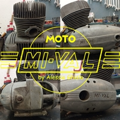
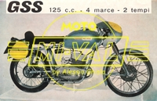

MODELL0 125 GSS
|  |
 |
|
SCHEDA TECNICA
MOTORE: Monocilindrico - tempi, alesaggio e corsa -- x -- mm
Cilindrata effettiva --- cc, potenza effettiva - CV a ---- giri, rapporto di compressione 1:-
Velocità massima --- km/h
Carburatore ---
Accensione ------
Cambio a - rapporti, trasmissione secondaria a catena
Frizione in bagno d'olio a dischi multipli
TELAIO A doppia culla
Forcella anteriore telescopica semi-idraulica
Sospensione posteriore a forcellone oscillante con ammortizzatore idraulico
Ruota anteriore: - x -- Ruota posteriore: - x --
Capacità serbatoio -- litri
Potenza impianto elettrico -- W
Consumo norme CUNA --- litri/100 km
Candela ----